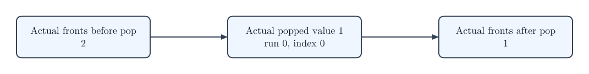
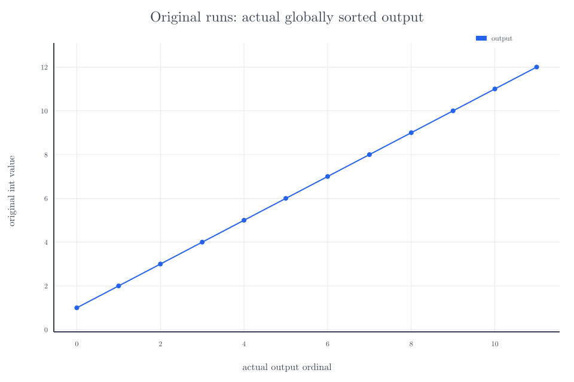
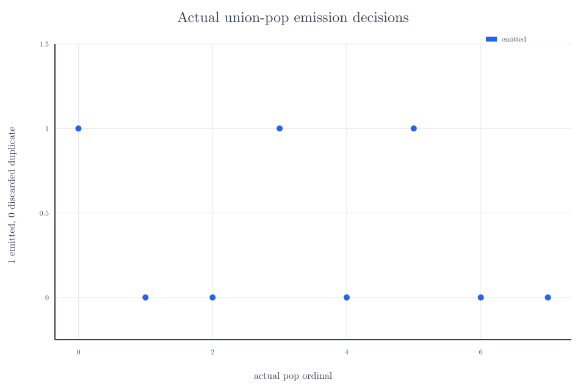
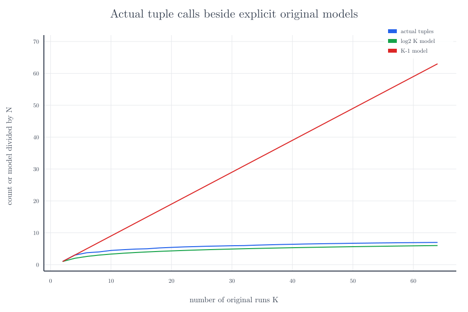

K-way merge through actual heap operations
Abstract
Merging sorted runs must emit every value in global order without repeatedly searching every remaining element. A minimum-front heap keeps one candidate from each nonempty run and replaces only the front just consumed. We inspect actual push/pop identities, retain the original three runs, and distinguish measured heap comparator calls from the original N log2 K and N(K−1) theoretical curves. Deduplicating output still consumes every original identity.
One front per active run
If each run is nondecreasing, its front is its smallest remaining value. The minimum of all remaining values is therefore the smallest active front. Pop that front, emit it, and insert the next value from its source run. Induction gives sorted output containing every original identity exactly once. Empty runs contribute no front.
Native heap keys are(value,list identity,within-list index), so equal values preserve original run priority and within-run order. Union merge uses the same producing heap but discards a popped value equal to the last emitted one. It does not avoid processing duplicate identities. Input sortedness and combined output geometry are checked in full before allocation. Integer extremes need no value arithmetic.
For K supplied rows, N values and R nonempty runs, work is O(K+N log(R+1)), with O(R) heap and O(N) ordinary output. Complete validation costs O(K+N). Captured heap operations and comparator counts exclude sorting checks, copies, output writes, allocation and time.
Actual equal-valued fronts
Use runs(1,1,4),(1,2) and an empty row. The two equal values from list0 precede list1’s equal value. The diagram names the first actual popped identity and actual queue occupancies; the table retains all producing operations, not a simulated priority queue.
#include <dm/dm.hpp>
int main() {
std::filesystem::create_directories("build");
const auto t = dm::algorithms::k_way_merge_trace({{1, 1, 4}, {1, 2}, {}});
std::print("| actual ordinal | push or pop | value | original run | original index | heap before | heap " "after | emitted |\n| ---: | --- | ---: | ---: | ---: | ---: | ---: | --- |\n");
for (std::size_t i = 0; i < t.steps.size(); ++i) {
const auto &e = t.steps[i];
std::print("| {} | {} | {} | {} | {} | {} | {} | {} |\n", i,
e.kind == dm::algorithms::MergeHeapKind::Push ? "push"
: "pop", e.value, e.list, e.index, e.heap_before,
e.heap_after, e.emitted);
}
const auto &e =
*std::find_if(t.steps.begin(), t.steps.end(), [](const auto &e) {
return e.kind == dm::algorithms::MergeHeapKind::Pop;
});
dm::graphics::Diagram d;
d.node("before", {0, 0},
std::format("Actual fronts before pop\n{}", e.heap_before)).node(
"value", {6, 0},
std::format("Actual popped value {}\nrun {}, index {}", e.value, e.list,
e.index)).node("after", {12, 0},
std::format("Actual fronts after pop\n{}",
e.heap_after)).edge("before",
"value").edge("value", "after").save_svg("build/k_way_merge_fronts.svg");
}| actual ordinal | push or pop | value | original run | original index | heap before | heap after | emitted |
|---|---|---|---|---|---|---|---|
| 0 | push | 1 | 0 | 0 | 0 | 1 | false |
| 1 | push | 1 | 1 | 0 | 1 | 2 | false |
| 2 | pop | 1 | 0 | 0 | 2 | 1 | true |
| 3 | push | 1 | 0 | 1 | 1 | 2 | false |
| 4 | pop | 1 | 0 | 1 | 2 | 1 | true |
| 5 | push | 4 | 0 | 2 | 1 | 2 | false |
| 6 | pop | 1 | 1 | 0 | 2 | 1 | true |
| 7 | push | 2 | 1 | 1 | 1 | 2 | false |
| 8 | pop | 2 | 1 | 1 | 2 | 1 | true |
| 9 | pop | 4 | 0 | 2 | 1 | 0 | true |

The original three sorted runs
Retain(1,4,7,10),(2,3,11),(5,6,8,9,12). The native trace identifies every original source of the twelve output values. The original two-way merge of the first two runs is also retained, with multiplicity and first-run ties preserved.
#include <dm/dm.hpp>
int main() {
std::filesystem::create_directories("build");
const std::vector<std::vector<int>> runs = {{1, 4, 7, 10}, {2, 3, 11},
{5, 6, 8, 9, 12}};
const auto t = dm::algorithms::k_way_merge_trace(runs);
std::vector<double> x, y;
std::print("| actual output ordinal | value | original run | original index |\n| ---: | ---: | ---: | " "---: |\n");
for (const auto &e : t.steps)
if (e.kind == dm::algorithms::MergeHeapKind::Pop) {
std::print("| {} | {} | {} | {} |\n", x.size(), e.value, e.list,
e.index);
x.push_back(x.size());
y.push_back(e.value);
}
std::print("\n| original first-two output ordinal | value |\n| ---: | ---: |\n");
const auto two = dm::algorithms::simple_merge(runs[0], runs[1]);
for (std::size_t i = 0; i < two.size(); ++i)
std::print("| {} | {} |\n", i, two[i]);
std::print("\nActual pushes {}; pops {}; tuple comparator calls {}; peak fronts {}.\n",
t.work.pushes, t.work.pops, t.work.node_comparisons,
t.work.peak_heap);
auto p = dm::graphics::RPlot::create();
p.line(x, y, "output", {37, 99, 235}, 2).points(x, y, "", {37, 99, 235},
4).title(
"Original runs: actual globally sorted output").x_label(
"actual output ordinal").y_label("original int value").save_svg(
"build/k_way_merge_original.svg");
}| actual output ordinal | value | original run | original index |
|---|---|---|---|
| 0 | 1 | 0 | 0 |
| 1 | 2 | 1 | 0 |
| 2 | 3 | 1 | 1 |
| 3 | 4 | 0 | 1 |
| 4 | 5 | 2 | 0 |
| 5 | 6 | 2 | 1 |
| 6 | 7 | 0 | 2 |
| 7 | 8 | 2 | 2 |
| 8 | 9 | 2 | 3 |
| 9 | 10 | 0 | 3 |
| 10 | 11 | 1 | 2 |
| 11 | 12 | 2 | 4 |
| original first-two output ordinal | value |
|---|---|
| 0 | 1 |
| 1 | 2 |
| 2 | 3 |
| 3 | 4 |
| 4 | 7 |
| 5 | 10 |
| 6 | 11 |
Actual pushes 12; pops 12; tuple comparator calls 21; peak fronts 3.

Deduplication changes output, not input work
The same runs with duplicates are processed once in ordinary mode and once in union mode. Both perform N pushes and N pops. Union mode records which actual pop is discarded, while empty rows never occupy the queue. This is a complete separate mode experiment rather than replaying a prefix.
#include <dm/dm.hpp>
int main() {
std::filesystem::create_directories("build");
const std::vector<std::vector<int>> runs = {{1, 1, 4}, {1, 2}, {}, {2, 4, 4}};
std::print("| mode | original values | pushes | pops | emitted | discarded duplicates | peak fronts " "|\n| --- | ---: | ---: | ---: | ---: | ---: | ---: |\n");
std::vector<double> x, y;
for (bool unique : {false, true}) {
const auto t = dm::algorithms::k_way_merge_trace(runs, unique);
std::print("| {} | {} | {} | {} | {} | {} | {} |\n",
unique ? "union" : "ordinary", t.work.input_values,
t.work.pushes, t.work.pops, t.work.emitted,
t.work.discarded_duplicates, t.work.peak_heap);
if (unique) {
std::size_t pop = 0;
for (const auto &e : t.steps)
if (e.kind == dm::algorithms::MergeHeapKind::Pop) {
x.push_back(pop++);
y.push_back(e.emitted ? 1 : 0);
}
}
}
std::print("\n| empty outer result size | all-empty result size |\n| ---: | ---: |\n| {} | {} |\n",
dm::algorithms::k_way_merge({}).size(),
dm::algorithms::union_merge({{}, {}}).size());
auto p = dm::graphics::RPlot::create();
p.points(x, y, "emitted", {37, 99, 235}, 5).y_limits(-.25, 1.5).title(
"Actual union-pop emission decisions").x_label("actual pop ordinal").y_label("1 emitted, 0 discarded duplicate").save_svg("build/k_way_merge_union.svg");
}| mode | original values | pushes | pops | emitted | discarded duplicates | peak fronts |
|---|---|---|---|---|---|---|
| ordinary | 8 | 8 | 8 | 8 | 0 | 3 |
| union | 8 | 8 | 8 | 3 | 5 | 3 |
| empty outer result size | all-empty result size |
|---|---|
| 0 | 0 |

Measured work beside the original cost models
Keep the original N=3000 and K=2,4,…,64. This time each K performs a real complete merge: place increasing values0 through2999 into runs by i modulo K, retaining within-run order. The comparator increments once per actual whole-tuple heap ordering call. It does not count each integer comparison inside that tuple operation. Counts depend on the standard-library heap, not a fixed universal formula.
The original N log2 K heap model and N(K−1) scan-all-fronts model remain explicitly theoretical reference formulas; neither is relabelled as measured comparisons or elapsed time. The plot divides all counts by N to make the definitions directly comparable. Only the native heap trace supplies measured work.
#include <dm/dm.hpp>
int main() {
std::filesystem::create_directories("build");
constexpr std::size_t N = 3000;
std::vector<double> x, y, h, s;
std::print("| K | actual values | actual tuple comparisons | heap model N log2 K | scan model N times K " "minus1 |\n| ---: | ---: | ---: | ---: | ---: |\n");
for (std::size_t k = 2; k <= 64; k += 2) {
std::vector<std::vector<int>> runs(k);
for (int i = 0; i < int(N); ++i)
runs[i % k].push_back(i);
const auto a = dm::algorithms::k_way_merge_analyze(runs);
std::print("| {} | {} | {} | {:.6f} | {} |\n", k, a.values.size(),
a.work.node_comparisons, N * std::log2(double(k)),
N * (k - 1));
x.push_back(k);
y.push_back(double(a.work.node_comparisons) / N);
h.push_back(std::log2(double(k)));
s.push_back(k - 1);
}
auto p = dm::graphics::RPlot::create();
p.line(x, y, "actual tuples", {37, 99, 235}, 2).line(x, h, "log2 K model",
{22, 163, 74}, 2).line(
x, s, "K-1 model", {220, 38, 38}, 2).y_limits(-2, 72).title(
"Actual tuple calls beside explicit original models").x_label(
"number of original runs K").y_label("count or model divided by N").save_svg("build/k_way_merge_work.svg");
}| K | actual values | actual tuple comparisons | heap model N log2 K | scan model N times K minus1 |
|---|---|---|---|---|
| 2 | 3000 | 2999 | 3000.000000 | 3000 |
| 4 | 3000 | 8994 | 6000.000000 | 9000 |
| 6 | 3000 | 11240 | 7754.887502 | 15000 |
| 8 | 3000 | 11988 | 9000.000000 | 21000 |
| 10 | 3000 | 13390 | 9965.784285 | 27000 |
| 12 | 3000 | 14081 | 10754.887502 | 33000 |
| 14 | 3000 | 14668 | 11422.064766 | 39000 |
| 16 | 3000 | 14977 | 12000.000000 | 45000 |
| 18 | 3000 | 15763 | 12509.775004 | 51000 |
| 20 | 3000 | 16256 | 12965.784285 | 57000 |
| 22 | 3000 | 16715 | 13378.294856 | 63000 |
| 24 | 3000 | 17013 | 13754.887502 | 69000 |
| 26 | 3000 | 17365 | 14101.319154 | 75000 |
| 28 | 3000 | 17578 | 14422.064766 | 81000 |
| 30 | 3000 | 17814 | 14720.671787 | 87000 |
| 32 | 3000 | 17957 | 15000.000000 | 93000 |
| 34 | 3000 | 18374 | 15262.388524 | 99000 |
| 36 | 3000 | 18674 | 15509.775004 | 105000 |
| 38 | 3000 | 18963 | 15743.782540 | 111000 |
| 40 | 3000 | 19184 | 15965.784285 | 117000 |
| 42 | 3000 | 19443 | 16176.952268 | 123000 |
| 44 | 3000 | 19626 | 16378.294856 | 129000 |
| 46 | 3000 | 19815 | 16570.685868 | 135000 |
| 48 | 3000 | 19949 | 16754.887502 | 141000 |
| 50 | 3000 | 20149 | 16931.568569 | 147000 |
| 52 | 3000 | 20271 | 17101.319154 | 153000 |
| 54 | 3000 | 20421 | 17264.662506 | 159000 |
| 56 | 3000 | 20525 | 17422.064766 | 165000 |
| 58 | 3000 | 20664 | 17573.942985 | 171000 |
| 60 | 3000 | 20742 | 17720.671787 | 177000 |
| 62 | 3000 | 20850 | 17862.588931 | 183000 |
| 64 | 3000 | 20919 | 18000.000000 | 189000 |

Scope and verification
All rows must be nondecreasing, checked in full even for rows that a malformed caller might expect to ignore. Combined N/output/counter geometry is checked before allocation. Scalar and count-only calls retain no input/history and no optional quota. Trace mode owns complete original rows/values, actual heap operations and output. The million-entry default counts K+N original records plus actual operations, admitted before copies/heap operations; zero disables only this optional ceiling. Output/runtime storage, tuple fields, capacities and bytes/RAM are excluded, so it is not a peak-memory guarantee.
Independent flattened/sorted multiset outputs and a separate ordered heap oracle
checked1000 ordinary/union runs and72016 actual push/pop records, including
source identities, queue occupancies and emission decisions. Another1000 studies
preserved frozen ordinary/union/two-way outputs exactly. Native tests also
retain every original N3000 profile case and cover sortedness rejection, integer
extremes, empty rows, quotas and ownership. The ten-report shared build
passed141 native CTest cases,45 directly instrumented
address/undefined-behaviour sanitizer cases,90 compiled/executed public
examples,412/412 scoped file definitions plus11/11 changed lagged-Fibonacci
engine definitions, and ten representative clangd hovers. All four complete
report programs executed and all four native figures were visually reviewed.
Receipts and repeatable checks are retained under
build/mepml-conversion/batch-184-193/.
References
D. E. Knuth, The Art of Computer Programming, Volume3: Sorting and Searching, second edition(1998), chapter5, author’s book page. The actual standard-library tuple ordering and explicit selected counters are native implementation contracts.